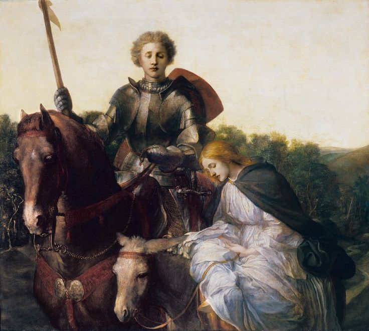

The First Booke of the Faerie Queene
The Legend of the Knight of the Red Crosse, or of Holinesse
Booke I · Holinesse
Canto I.
The Argument
The Patron of true Holiness,Foul Error doth defeat:Hypocrisy him to entrap’,Doth to his home entreat.The Patron of true Holinesse,Foule Errour doth defeate:Hypocrisie him to entrapp’,Doth to his home entreate.
i
A Gentle Knight was pricking on the plain,A Gentle Knight was pricking on the plaine,
Yclad in mighty arms and silver shield,Y cladd in mightie armes and siluer shielde,
Wherein old dints of deep wounds did remain,Wherein old dints of deepe wounds did remaine,
The cruel marks of many’ a bloody field;The cruell markes of many’ a bloudy fielde;
Yet arms till that time did he never wield:Yet armes till that time did he neuer wield:
His angry steed did chide his foaming bit,His angry steede did chide his foming bitt,
As much disdaining to the curb to yield:As much disdayning to the curbe to yield:
Full jolly knight he seem’d, and fair did sit,Full iolly knight he seemd, and faire did sitt,
As one for knightly jousts and fierce encounters fit.As one for knightly giusts and fierce encounters fitt.
- 4 bloudy] bloody 1590 passim
ii
But on his breast a bloody Cross he bore,But on his brest a bloudie Crosse he bore,
The dear remembrance of his dying Lord,The deare remembrance of his dying Lord,
For whose sweet sake that glorious badge he wore,For whose sweete sake that glorious badge he wore,
And dead as living ever him ador’d:And dead as liuing euer him ador’d:
Upon his shield the like was also scor’d,Vpon his shield the like was also scor’d,
For sovereign hope, which in his help he had:For soueraine hope, which in his helpe he had:
Right faithful true he was in deed and word,Right faithfull true he was in deede and word,
But of his cheer did seem too solemn sad;But of his cheere did seeme too solemne sad;
Yet nothing did he dread, but ever was ydrad.Yet nothing did he dread, but euer was ydrad.
- 1 But] And 1590
iii
Upon a great adventure he was bond,Vpon a great aduenture he was bond,
That greatest Gloriana to him gave,That greatest Gloriana to him gaue,
That greatest Glorious Queen of Faerie lond,That greatest Glorious Queene of Faerie lond,
To winn him worship, and her grace to have,To winne him worship, and her grace to haue,
Which of all earthly things he most did crave;Which of all earthly things he most did craue;
And ever as he rode, his heart did earnAnd euer as he rode, his hart did earne
To prove his puissance in battle braveTo proue his puissance in battell braue
Upon his foe, and his new force to learn;Vpon his foe, and his new force to learne;
Upon his foe, a Dragon horrible and stern.Vpon his foe, a Dragon horrible and stearne.


iv
A lovely Lady rode him fair beside,A louely Ladie rode him faire beside,
Upon a lowly Ass more white than snow,Vpon a lowly Asse more white then snow,
Yet she much whiter, but the same did hideYet she much whiter, but the same did hide
Under a vel, that wimpled was full low,Vnder a vele, that wimpled was full low,
And over all a black stole she did throw,And ouer all a blacke stole she did throw,
As one that inly mourn’d: so was she sad,As one that inly mournd: so was she sad,
And heavy sat upon her palfrey slow:And heauie sat vpon her palfrey slow:
Seemed in heart some hidden care she had,Seemed in heart some hidden care she had,
And by her in a line a milk white lamb she lad.And by her in a line a milke white lambe she lad.
- 7 sat] sate 1590
v
So pure an innocent, as that same lamb,So pure an innocent, as that same lambe,
She was in life and every virtuous lore,She was in life and euery vertuous lore,
And by descent from Royal linage cameAnd by descent from Royall lynage came
Of ancient Kings and Queens, that had of yoreOf ancient Kings and Queenes, that had of yore
Their scepters stretch’d from East to Western shore,Their scepters stretcht from East to Westerne shore,
And all the world in their subjection held;And all the world in their subiection held;
Till that infernal fiend with foul uproarTill that infernall feend with foule vprore
Forwasted all their land, and them expel’d:Forwasted all their land, and them expeld:
Whom to avenge, she had this Knight from far compel’d.Whom to auenge, she had this Knight from far compeld.
- 1 an innocent] and innocent 1590; an Innocent 1609
- 9 compeld] cõpeld 1590, 1596 passim
Mockup: stanzas i–v of fifty-five. Modern text from the published edition; the Original view is Smith’s 1909 text with his collation of 1590, 1596 and 1609.